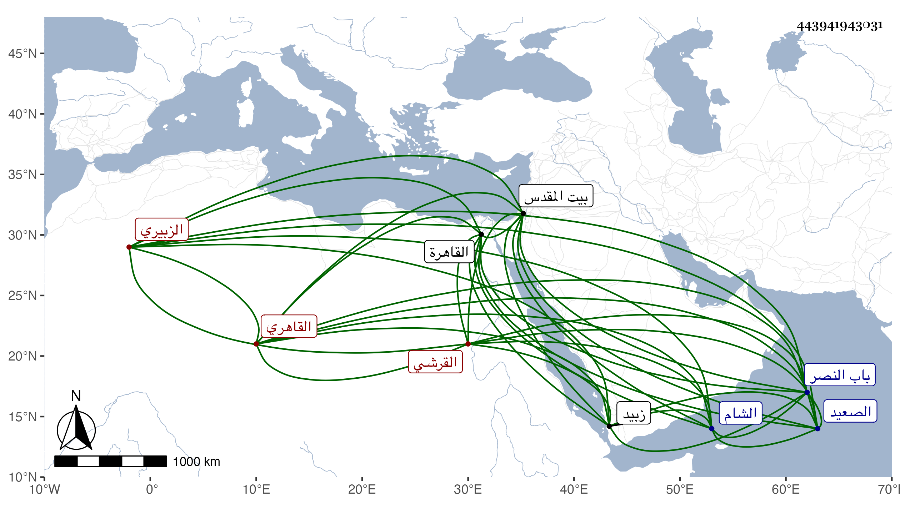

0902Sakhawi.DawLamic.ITO20230111-ara1.EIS1600.443941943031
Biography ID: 443941943031
338
عبد الرحمن بن محمد بن حسن بن سعد بن محمد بن يوسف بن حسن تقي الدين أوزين الدين بن ناصر الدين بن البدر القرشي الزبيري القاهري الآتي أخوه محمد وأبوهما ويعرف كهما بابن الفاقوسي . ولد في ربيع الثاني سنة ست وثمانين وسبعمائة بالقاهرة ونشأ بها فحفظ القرآن وجوده عند الفخر الضرير وألفية ابن مالك وحضر دروس الغماري في النحو وحبب إليه علم التعبير وأدمن مطالعة كتبه والاجتماع بأهله فمهر فيه بحيث فاق العارفين فيه على قلتهم ومن بديع تعبيره قوله لمن قص عليه أنه رأى في إحدى يديه رغيفا وفي الأخرى قرصا وهو يأكل منهما أن له زوجة وهو يزني بابنتها فاعترف الرائي واستغفر وتاب ، وكان قد اعتنى به أبوه فأحضره على ابن حاتم ثم اسمعه الكثير عن التنوخي وابن أبي المجد وابن الشيخة والحلاوي والسويداوي والقطب عبد الكريم الحلبي والعراقي والهيثمي وابن الملقن والصدر المناوي والمجد إسماعيل الحنفي والمحب بن هشام وحفيد أبي حيان والجمال العرياني في آخرين ، وأجاز له أبو هريرة بن الذهبي والشهاب ابن العز وخديجة ابنة ابن سلطان وابن أيدغمش وابن عرفة والكمال بن النحاس وابن الخراط وابن الهزبر وابن الموفق وابن يفتح الله والمجد اللغوي والشرف ابن المقرىء والنفيس العلوي وخلق من أماكن شتى في عدة استدعاءات أقدم ما وقفت عليه منها في سنة ثلاث وتسعين ، وحدث بالكثير سمع منه الفضلاء حملت عنه الكثير وخرجت له ما علمته من مروياته في جزء وقد حج وزار بيت المقدس ودخل الشام والصعيد وغيرهما وأقام مدة بزبيد بزي الجند ثم تحول لزي الفقهاء بعد وفاة أبيه لأمر اقتضاه وعرف بالخوض فيما لا يعنيه والتسارع لنقل ما لا خير فيه بحيث أوذي بسبب ذلك وكذا عرف بالتعرض لأعراض الناس حتى صار ممن يتقي لسانه ولكن تناقص حاله في كل هذا أخيرا ولمحبته في إقبال الطلبة على السماع منه ألحق اسمه ببعض المرويات فلم يلتفت لالحاقه مع تصميمه ومكابرته ، وما أخذ عنه كبير أحد بعد هذا وإن كان الحفاظ ممن تقدم ما اعتمدوا مثل ذلك في اسقاط مثله لكون الاعتماد إنما هو على المفيدين عنهم كما بينته في مكان آخر . مات في يوم الثلاثاء خامس رمضان سنة أربع وستين ولم ينقطع سوى يوم أو يومين ودفن بتربتهم خارج باب النصر عفا الله عنه ورحمه وإيانا .
